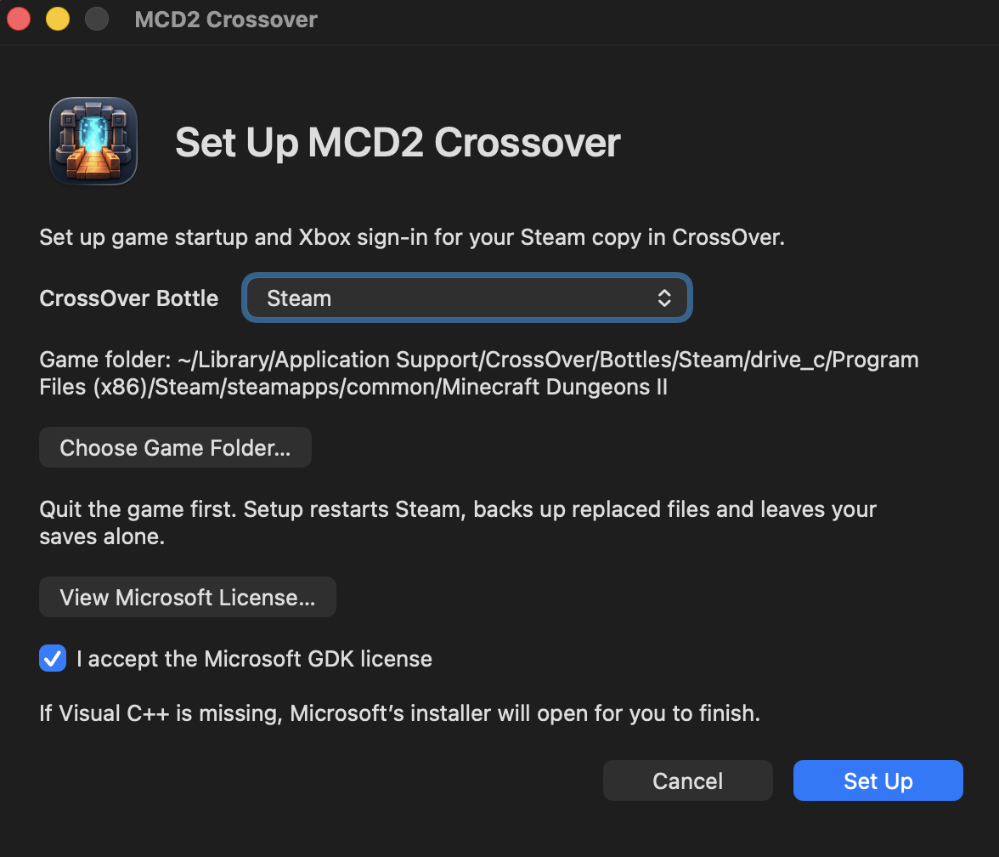

Play Minecraft Dungeons II on your Mac
A free fix for running Minecraft Dungeons II (Minecraft Dungeons 2) through CrossOver on Apple Silicon. It gets the Steam version past the missing Visual C++ and Game Runtime prompts and the sign-in errors 0060, 0063, 0064 and 0020.
Version 0.1.0 · 47 MB DMG · Apple Silicon · Steam version · Free and open source (MIT)

What you need
- An Apple Silicon Mac
- CrossOver, with Windows Steam installed in a bottle
- Minecraft Dungeons II bought and installed through that Steam
- A Microsoft account
Install
- Download MCD2-Crossover-0.1.0-arm64.dmg from the download page.
- Open it and drag MCD2 Crossover into Applications.
- Quit the game, open MCD2 Crossover, choose your Steam bottle and click Set Up. Setup restarts Steam. If Visual C++ is missing, finish the Microsoft installer that opens.
- Click Play. If a Microsoft code window appears, sign in on Microsoft's website with that code and leave the small window open until it closes by itself.
No Terminal needed. Setup backs up every file it replaces and doesn't touch your saves or controller mods.
After the first sign-in you can start the game straight from Steam. Sign-in renews in the background. Open the app again to sign out, switch accounts or move to another bottle.
macOS says the app can't be opened? It isn't notarized by Apple. Go to System Settings → Privacy & Security and click Open Anyway. Keep Gatekeeper turned on.
Errors it fixes
| What you see | Why it happens under CrossOver |
|---|---|
| “The following items are needed to run”: Visual C++ 2015–2022 and Gaming Services | The game's launcher checks for Windows-only prerequisites, and its bundled Visual C++ installer refuses to run when a newer version is already there. Setup checks for real Visual C++ and has Steam start the game itself. |
| Game Runtime is not installed | The Xbox runtime the game needs isn't part of CrossOver. Setup adds Microsoft's portable runtime next to the game. |
| Verification failed 0060 | CrossOver tells the game it's offline, so it looks for saved proof of ownership and finds none. The fix reports your real connection and provides a working Xbox sign-in. |
| Log in failed 0063 | The Steam login request to Microsoft's servers was sent with conflicting size headers and rejected. |
| Log in failed 0064 | The same header problem on the next login requests. |
| Microsoft account linking failed 0020 | A sign-in function the game calls was missing. It now returns the account you signed in with. |
| Crashes at startup or during HTTPS setup, “task queue missing” | Networking and runtime pieces that don't work under CrossOver are replaced with compatible ones. Certificate checks stay on. |
Details for each fix: startup and sign-in fixes.
FAQ
Do I need to own the game?
Yes. It works with your own Steam copy and your own Microsoft account. The game's Steam and Xbox ownership checks still run.
Does it see my Microsoft password?
No. You sign in on Microsoft's website with a one-time code. The app keeps only the renewal token, in macOS Keychain, and Sign Out deletes it.
Could Microsoft block it?
Possibly. Sign-in uses the game's own Microsoft app ID rather than one registered for this tool, so Microsoft could shut that route. Use it at your own risk.
Does it work on Intel Macs, or with the Xbox app or Game Pass version?
No. Apple Silicon and the Steam version only.
What has been tested?
An M5 Pro with CrossOver 26.3: setup, getting into the game, setup in a second bottle and launching straight from Steam. Long sessions, multiplayer, other Macs and installing Visual C++ where it's missing haven't been tested yet. The intermittent stall on the Warden screen has no confirmed fix.
Something still fails. Where do I report it?
Open an issue on GitHub with the exact error, your Mac, and your macOS and CrossOver versions.